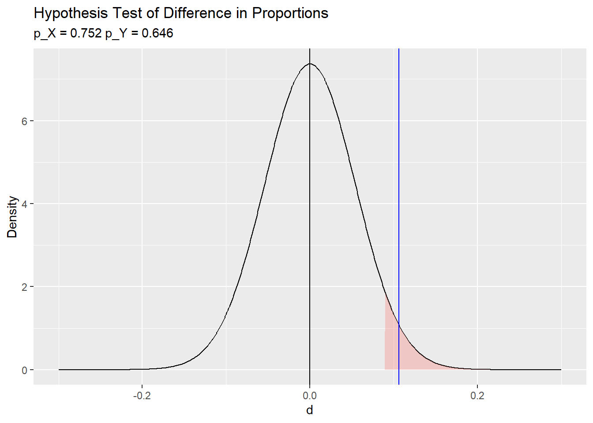

2.6 Geometric
If \(X\) is the count of Bernoulli trials of success probability \(p\) required to achieve the first successful event, then \(X\) is a random variable with a geometric distribution \(X \sim G(p)\). The probability of \(X = x\) trials is
\[f(x; p) = p(1-p)^{x-1}.\]
with \(E(X)=\frac{{n}}{{p}}\) and \(Var(X) = \frac{(1-p)}{p^2}\). The probability of \(X<=n\) trials is
\[F(X=n) = 1 - (1-p)^n.\]
Examples
What is the probability a marketer encounters x = 3 people on the street who did not attend a sporting event before the first success if the population probability is p = 0.20?
\[f(4; 0.20) = 0.20(1-0.20)^{4-1} = 0.102.\]
Function dgeom() calculates the geometric distribution probability. Parameter x is the number of failures, not the number of trials.
## [1] 0.1data.frame(cnt = rgeom(n = 10000, prob = 0.20)) %>%
count(cnt) %>%
top_n(n = 15, wt = n) %>%
ungroup() %>%
mutate(pct = round(n / sum(n), 3),
X_eq_x = cnt == 3) %>%
ggplot(aes(x = as.factor(cnt), y = n, fill = X_eq_x, label = pct)) +
geom_col(alpha = 0.8) +
scale_fill_mf() +
geom_text(size = 3) +
theme_mf() +
theme(legend.position = "none") +
labs(title = "Distribution of trials prior to first success",
subtitle = paste("P(X = 3) | X ~ G(.2) = ", round(dgeom(2, .2), 3)),
x = "Unsuccessful trials",
y = "Count",
caption = "simulation of n = 10,000 samples from geometric dist.") 
What is the probability the marketer fails to find someone who attended a game in x <= 5 trials before finding someone who attended a game on the sixth trial when the population probability is p = 0.20?
## [1] 0.74## [1] 0.75
What is the probability the marketer fails to find someone who attended a game on x >= 5 trials before finding someone who attended a game on the next trial?
## [1] 0.26## [1] 0.26
The expected number of trials to achieve the first success is 1 / 0.20 = 5, Var(X) = (1 - 0.20) / 0.20^2 = 20?
## [1] 5## [1] 5.1## [1] 20## [1] 20